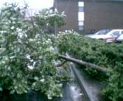

Ураган первой степени "Чарли", 14 августа 2004.

Снимки сделаны во время прохождения "глаза" урагана. Дождь прекратился,
стих ветер. Я решил, что ураган закончился, и вышел сфотографировать
упавшее дерево. На первом снимке виден трейлер, который гоняло ветром
по улице.
Прошло 5 минут. Ощутите разницу. На первом снимке можно разглядеть темные
пятна в небе. Это ветки деревьев, летящие с огромной скоростью. Снимки
сделаны "из укрытия", через окно.
Прошло еще 20 минут. На этот раз - действительно все. Осмотр места
происшествия.

 Летающие ветки приземлились. Некоторые участки дороги выглядят зелеными
лесными полянами.
Летающие ветки приземлились. Некоторые участки дороги выглядят зелеными
лесными полянами.
Поваленных деревьев, наверное, тысячи.
Символ несгибаемой стойкости.
Назад|На главную